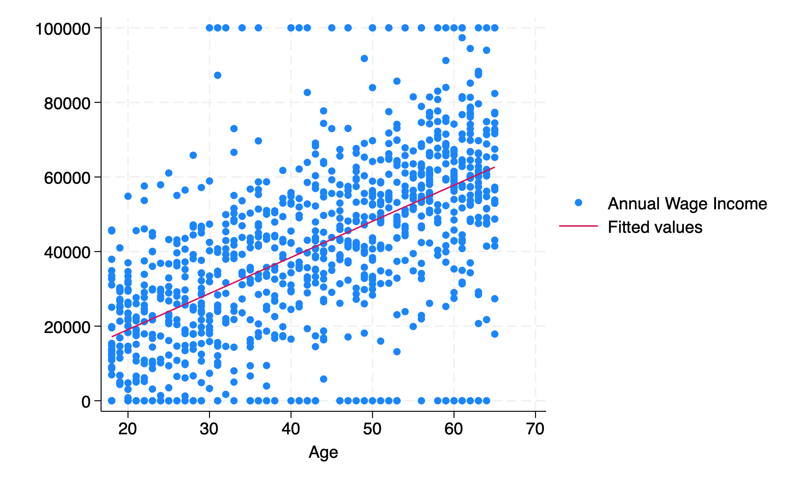

cd "/Users/egong@middlebury.edu/Library/CloudStorage/Dropbox/Middlebury/Course_Archieve/Spring_2026/ECON_0111/2_Assignments/Labs/Lab_2"ECON 111 - Lab 2 : Joint Distributions
Scatter Plots / Bar Graphs / Cross-Tabs
Preliminaries
Before beginning this lab, make sure that you have done the following:
In your Google Drive, make sure you have a folder “Lab_2”
Downloaded the necessary data into the folder from the Google Drive site
Open and save a DO file “Lab_2.do”
Set Path
Open and view the dataset
use lab_2.dta, clear
des
sum
Contains data from lab_2.dta
Observations: 1,000
Variables: 8 6 Feb 2024 16:36
-------------------------------------------------------------------------------
Variable Storage Display Value
name type format label Variable label
-------------------------------------------------------------------------------
person_id float %9.0g id number
STATE str20 %20s State of Residence
age byte %8.0g Age
incwage float %9.0g Annual Wage Income
edu float %20.0g edu Highest Degree Completed
White long %9.0g White White
Black long %9.0g Black Black
heart_disease float %9.0g heart_disease
==1 if Diagnosed with heart
disease
-------------------------------------------------------------------------------
Sorted by:
Variable | Obs Mean Std. dev. Min Max
-------------+---------------------------------------------------------
person_id | 1,000 196567.3 110148.5 294 383864
STATE | 0
age | 1,000 42.579 14.49531 18 65
incwage | 1,000 40944.56 24143.2 0 100000
edu | 1,000 2.23 .6045374 1 3
-------------+---------------------------------------------------------
White | 1,000 .782 .413094 0 1
Black | 1,000 .128 .334257 0 1
heart_dise~e | 1,000 .209 .4067978 0 1Important Tip: Save your do file frequently.
Joint Distributions and Associations between Two Variables
In Lab 1, we primarily looked at a single distribution (income). Now we want to look at the joint distributions of two variables. Why do we want to see this? We use these joint distributions to detect patterns. Do older people earn more? Do Black individuals earn less? Are there racial differences in heart disease? We will use joint distributions to assess these questions.
Case 1: Joint Distribution of two continuous variables
Both “incwage” and “age” are continuous. How do we know?
histogram incwage
histogram ageWe see that both “incwage” and “age” take many values.
One way of looking at their joint-distributions is to use a scatter plot. In STATA, we can use the menu “Graphics>Twoway Graph”
A menu pops up. Select “Create” and then under Basic plots select “Scatter”. For the y-variable choose “incwage” and for the x variable choose “age”. Hit “submit” and see what happens.
Question 1: What does each dot represent? Is there an association between age and income?
Now look at the results screen. You will see code. You can copy and paste this to your DO file. If you don’t know the code, especially for graphs, you can always use the menu option, and then copy and paste the code.
twoway (scatter incwage age)How can we summarize the association between age and income? We can use a linear regression line.
twoway (scatter incwage age ) (lfit incwage age)
graph export "scatter_income_age.png", replace
The linear regression line shows us the linear association between age and income. In other words, as age increases by one year, how much is income predicted to increase? To summarize, a scatterplot represents a joint distribution between age and income.
Question 2: What does the line tell us?
Case 2: Joint Distribution of a continuous and discrete variable
Question 3: Look at the joint distribution between income and Black. Use a scatter plot and best fit line. How does the figure look? Why does it look this way?
A discrete variable only takes a limited (few) number of values (like 0 and 1). To look at the joint distribution when one variable is discrete, I recommend using a bar graph.
Case 3: Joint Distribution of two discrete variables
Question 5: Plot a figure that shows the joint distribution of “heart_disease” and “Black”.
We can also create a cross-tab between heart disease and Black (the textbook uses “contingency table”).
tab heart_disease Black
tab heart_disease Black, column
==1 if |
Diagnosed |
with heart | Black
disease | Non-Black Black | Total
-----------+----------------------+----------
No | 688 103 | 791
Yes | 184 25 | 209
-----------+----------------------+----------
Total | 872 128 | 1,000
+-------------------+
| Key |
|-------------------|
| frequency |
| column percentage |
+-------------------+
==1 if |
Diagnosed |
with heart | Black
disease | Non-Black Black | Total
-----------+----------------------+----------
No | 688 103 | 791
| 78.90 80.47 | 79.10
-----------+----------------------+----------
Yes | 184 25 | 209
| 21.10 19.53 | 20.90
-----------+----------------------+----------
Total | 872 128 | 1,000
| 100.00 100.00 | 100.00 Question 6: What is the difference between the two tables? Can you infer if Black individuals in the sample have higher or lower rates of heart disease?
Exporting Tables
We’ve seen already how to export graphs using graph export. How about a table? We can install a user-written command that handles this. Typing ssc install asdoc in the command line will install the command asdoc. You can then use it in the following way:
asdoc tab heart_disease Black , column save(heart_disease_black.doc)Check out the file and let me know what you think.
Recap
To visualize joint distributions between:
Case 1: two continuous variables => scatter plot
Case 2: one continuous and one discrete => bar graph or box plot
Case 3: two discrete => bar graph or cross-tab
Bonus Material: Variable Labels
Question 7: Generate a variable “college” that equals one if a person has a college degree and 0 if not. This is known as an indicator variable.
Let’s see what values edu takes.
tab edu
Highest Degree |
Completed | Freq. Percent Cum.
---------------------+-----------------------------------
Less than HS diploma | 94 9.40 9.40
HS diploma | 582 58.20 67.60
College Degree | 324 32.40 100.00
---------------------+-----------------------------------
Total | 1,000 100.00But you will see that the following doesn’t work.
gen college = 1 if edu=="College Degree"Why? There are some variables like “edu” in the dataset that take numeric values BUT have “labels” over these values.
sum edu
des edu
label list edu
tab edu, nolabel
Variable | Obs Mean Std. dev. Min Max
-------------+---------------------------------------------------------
edu | 1,000 2.23 .6045374 1 3
Variable Storage Display Value
name type format label Variable label
-------------------------------------------------------------------------------
edu float %20.0g edu Highest Degree Completed
edu:
1 Less than HS diploma
2 HS diploma
3 College Degree
Highest |
Degree |
Completed | Freq. Percent Cum.
------------+-----------------------------------
1 | 94 9.40 9.40
2 | 582 58.20 67.60
3 | 324 32.40 100.00
------------+-----------------------------------
Total | 1,000 100.00The variable “edu” has a value label “edu” (confusing!). This label assigns a label of “less than a HS diploma” to 1, “HS diploma” to 2, and “College Degree” to a 3.
To generate the “college” variable, we should do the following.
gen college = 1 if edu==3
replace college = 0 if edu>=1 & edu<=2
tab college(676 missing values generated)
(676 real changes made)
college | Freq. Percent Cum.
------------+-----------------------------------
0 | 676 67.60 67.60
1 | 324 32.40 100.00
------------+-----------------------------------
Total | 1,000 100.00And finally, there’s an alternative way of doing this.
gen college2 = (edu==3)
tab college2
college2 | Freq. Percent Cum.
------------+-----------------------------------
0 | 676 67.60 67.60
1 | 324 32.40 100.00
------------+-----------------------------------
Total | 1,000 100.00